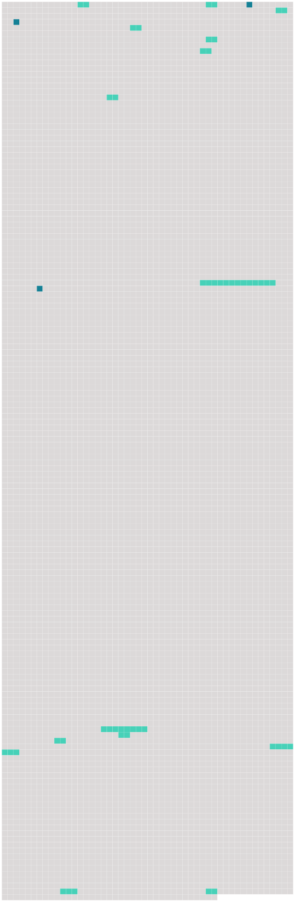

Longueur nb maillons : 17 mentions |
 |
Avant la célébration du mariage, l'officier de l'état civil fera [deux publications] , à huit jours d'intervalle, un jour de dimanche, devant la porte de la maison commune. [Ces publications] , et l'acte qui [en] sera dressé, énonceront les prénoms, noms, professions et domiciles, des futurs époux, leur qualité de majeurs ou de mineurs, et les prénoms, noms, professions et domiciles de leurs pères et mères.
Cet acte énoncera, en outre, les jours, lieux et heures où [les publications] auront été faites : il sera inscrit sur un seul registre, qui sera côté et paraphé comme il est dit en l'article 41, et déposé, à la fin de chaque année, au greffe du tribunal de l'arrondissement. [1 phrases] Un extrait de l'acte de [publication] sera et restera affiché à la porte de la maison commune, pendant les huit jours d'intervalle de l'une à l'autre publication. [2 phrases]
Si le mariage n'a pas été célébré dans l'année, à compter de l'expiration du délai [des publications] , il ne pourra plus être célébré qu'après que de nouvelles publications auront été faites dans la forme ci-dessus prescrite. [3 phrases]
L'officier de l'état civil fera, sans délai, une mention sommaire des oppositions sur le registre [des publications] ; il fera aussi mention, en marge de l'inscription desdites oppositions, des jugemens ou des actes de main-levée dont expédition lui aura été remise. [3 phrases]
S'il n'y a point d'opposition, il en sera fait mention dans l'acte de mariage ; et si [les publications] ont été faites dans plusieurs communes, les parties remettront un certificat délivré par l'officier de l'état civil de chaque commune, constatant qu'il n'existe point d'opposition. [15 phrases] Le jour désigné par les parties après les délais [des publications] , l'officier de l'état civil, dans la maison commune, en présence de quatre témoins parens ou non parens, fera lecture aux parties, des pièces ci-dessus mentionnées, relatives à leur état et aux formalités du mariage et du chapitre VI du titre du Mariage, sur les Droits et les Devoirs respectifs des époux. [59 phrases]
[Les publications de mariage des militaires et employés à la suite des armées] , seront faites au lieu de leur dernier domicile [elles] seront mises en outre, vingt-cinq jours avant la célébration du mariage, à l'ordre du jour du corps, pour les individus qui tiennent à un corps ; et à celui de l'armée ou du corps d'armée, pour les officiers sans troupes, et pour les employés qui en font partie. [186 phrases]
[Les deux publications ordonnées par l'article 63] , au titre des Actes de l'état civil, seront faites à la municipalité du lieu où chacune des parties contractantes aura son domicile. [1 phrases]
Néanmoins, si le domicile actuel n'est établi que par six mois de résidence, [les publications] seront faites en outre à la municipalité du dernier domicile. [1 phrases]
Si les parties contractantes, ou l'une d'elles, sont, relativement au mariage, sous la puissance d'autrui, [les publications] seront encore faites à la municipalité du domicile de ceux sous la puissance desquels elles se trouvent. [3 phrases]
Le mariage contracté en pays étranger entre Français, et entre Français et étranger, sera valable s'il a été célébré dans les formes usitées dans le pays, pourvu qu'il ait été précédé [des publications prescrites par l'article 63] , au titre des Actes de l'état civil, et que le Français n'ait point contrevenu aux dispositions contenues au chapitre précédent. [53 phrases]
Si le mariage n'a point été précédé des [deux publications requises] , ou s'il n'a pas été obtenu des dispenses permises par la loi, ou si les intervalles prescrits dans [les publications] et célébrations n'ont point été observés, le commissaire fera prononcer contre l'officier public une amende qui ne pourra excéder trois cents francs ; et, contre les parties contractantes, ou ceux sous la puissance desquels elles ont agi, une amende proportionnée à leur fortune. |
 |
La ressource peut être téléchargée sur la page Ortolang
Si vous avez des questions ou vous voyez des erreurs, merci d'envoyer un mail à silvia.federzoni89@gmail.com
Site développé par S. Federzoni (contact)